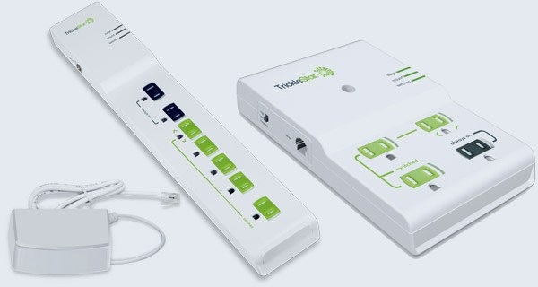
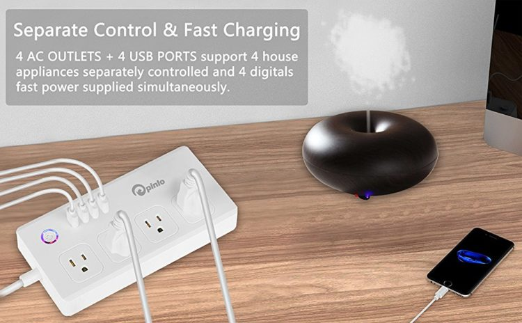
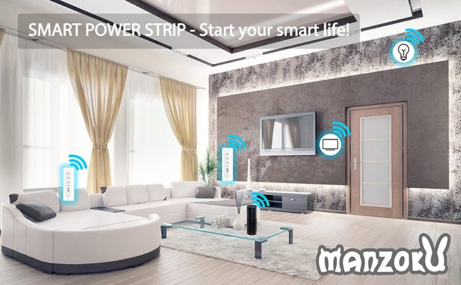
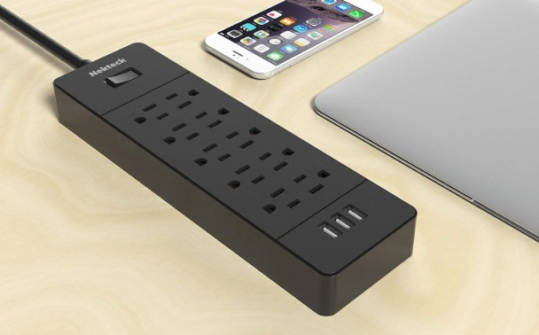
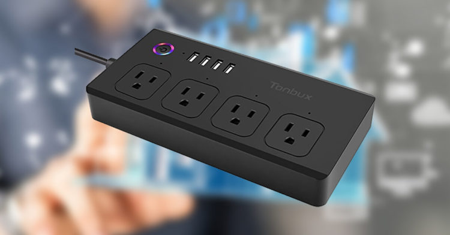

Smart power strips work to reduce your power usage by shutting down power to products that go into standby mode. Doing so may save you some serious cash. Standby power consumption in an average home ranges from 5 percent to 10 percent of your household energy consumption. It can also account for about 1 percent of worldwide carbon dioxide emissions.
HOW THEY WORK
Printers, DVD players, computers and plasma TVs are all examples of products with standby modes that make them convenient to use but suck significant power on the sly. This so-called phantom power drain costs you money, wastes electricity and ups your carbon output to boot.
You could combat vampire power by continually unplugging your gadgets, but with a smart power strip you won't have to. Keep reading to see which products suit your needs and how they work to make your home electronics more energy efficient.
SOME OF THE TOP SMART POWER STRIPS
TrickleStar Smart Power Strip
This is one of the better power strips you can choose if your goal is to reduce energy costs. It puts you in control of the outlets that are active at any given time so with the touch of a button, you can completely cut off electricity to certain outlets without affecting others.
Pinlo Smart Power Strip
This is a relatively small unit but the great thing about it is that you can even use an accompanying smartphone app to control the power going to any single outlet on the strip from the phone itself. Even if you’re not home, you can allow power to get to certain items and cut power off to others. It’s a great idea and it promises to be one that will routinely be used in the future.
Manzoku Smart Power Strip
This one looks almost exactly like a traditional surge protector but don’t let its appearance fool you. Just like the one listed above, you can control the power that goes to certain items by using an app on your smartphone. There is also a place to plug in additional devices, thanks to the inclusion of four separate USB ports.
Nektek Smart Power Strip
TThis is one of the more basic smart power strips on the market, but it’s also one of the most reliable options available to you. It operates basically like a surge protector that can control the amount of power that goes to each outlet individually. If you’re looking for something that can get the job done without a lot of extra bells and whistles, this might become your go-to product.
Tonbux Smart Power Strip
If you’re looking for a product that seems to have it all, this is one that you should be happy with. It has four AC outlets along with four additional USB ports. It serves as both a power strip and a surge protector and it’s even capable of providing its own Wi-Fi source, giving you that extra boost of power when you need it most.